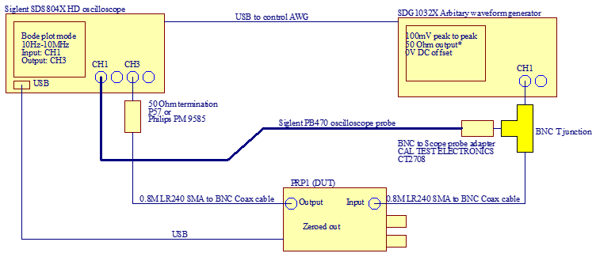
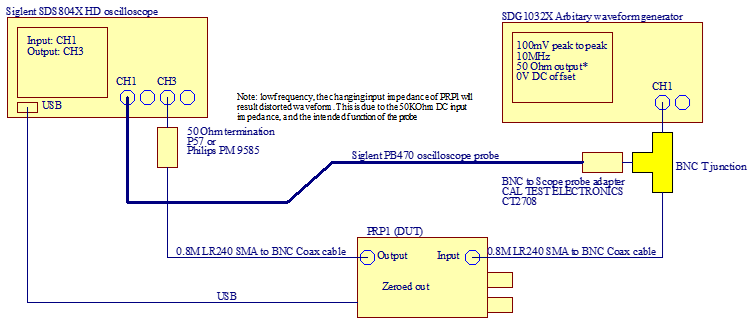
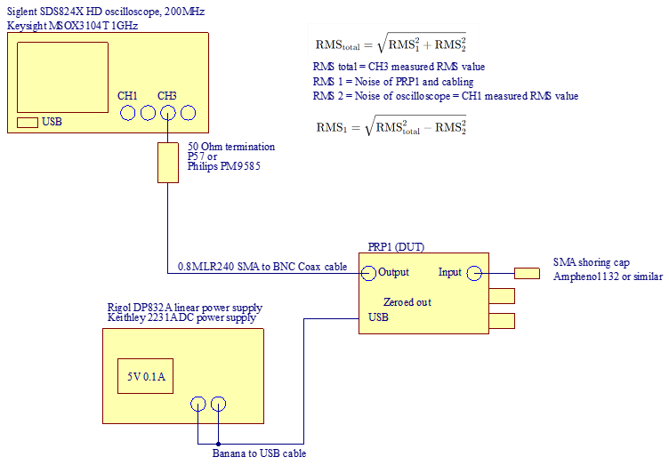
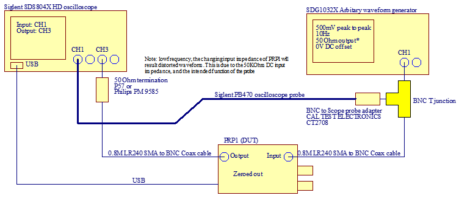
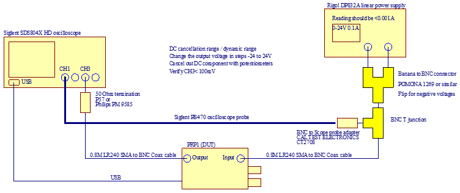
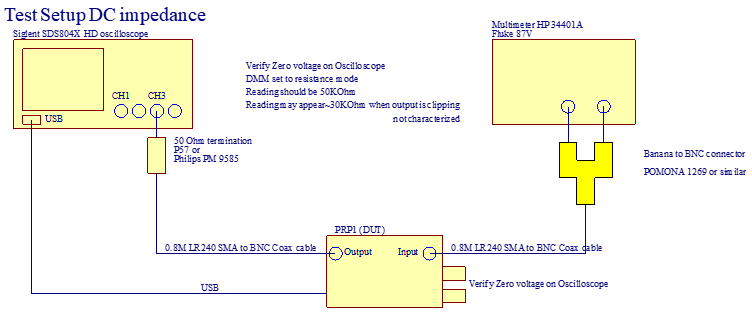
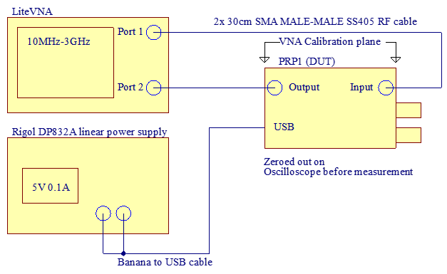
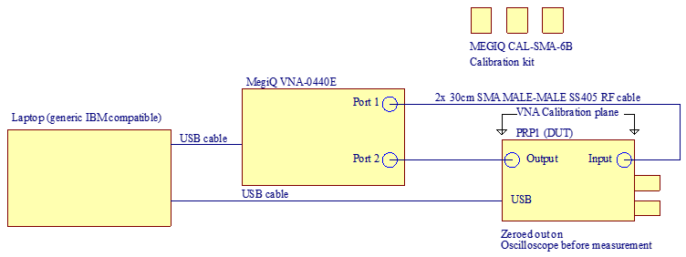

This documents lists all the measurements that are done on the PRP1 for design characterisation.
The measurements were done on TBD (at least two) separate units, results are published in folders
Verifies the gain errors across the frequency span
\
Equipment used:
Settings:
Pass criteria: 1dB maximum deviation between minimum and maximum of the gain plot
Note: Crossover frequency is ~ 100 KHz
Note: 1.3:1 is 0.77 or -2dB
Verifies the 1.3:1 probe attenuation
\
Equipment used:
Settings on generator:
Pass criteria: 5% maximum deviation between RMS and Peak to peak value of CH1 and CH3\
Verifies the noise figure of the PRP1

Settings:
Pass criteria: \ Noise = sqrt{CH3^2 - CH1^2) < 50uV
Verifies the 1.3:1 probe attenuation on DC

Equipment used:
Settings:
Pass criteria:
Measured 100mV peak to peak on the oscilloscope on CH1 and CH3
Two measurements are 5% within each other
Verifies the +/-24V Cancellation range of the PRP1
\
Equipment used:
Settings:
Pass criteria: PRP1 can be adjusted to less than 100mV measured on the oscilloscope Output current of the power supply is less than 1mA
Verifies the active signal range of the PRP1
Equipment used:
Settings:
Pass criteria: Measured 500mV peak to peak on the oscilloscope
Verifies the 50KOhm input impedance in DC conditions of the PRP1
\
Equipment used:
Settings:
Pass criteria: 50Kohm +/- 2% measured on DMM
Verifies the minimum 2 GHz bandwidth of the PRP1

Equipment used:
Settings:
Pass criteria: 1dB maximum deviation between minimum and maximum of S12 up to 2 GHz
Nominal gain is -2dB +/- 1dB
Note: 1.3:1 is 0.77 or -2dB
Verifies the minimum 2 GHz bandwidth of the PRP1 with a more accurate VNA
\
Note: Minimum frequency setting of the VNA is 400 MHz
Equipment used:
Settings:
Pass criteria: 1dB maximum deviation between minimum and maximum of S12 up to 2 GHz
Nominal gain is -2dB +/- 1dB
\
Equipment used:
Pass criteria: None S parameters provided for reference
Equipment used:
Pass criteria: VSWR < 1.5 up to 2 GHz
This is equivalent to Return loss < -13dB
Or capacitive loading of ~ 0.5pF
Verifies the high freqency noise content of the PRP1
2 GHz scope should be used for ideal conditions, but I don't have access to one
Equipment used:
Pass criteria: TBD
Equipment used:
Settings:
Pass criteria: Power consumption less than 20mA
The device may drive it's +/- 1.5V offset signal to it's input through it's 50KOhm input impedance. It only does it when it's not zero'd out.